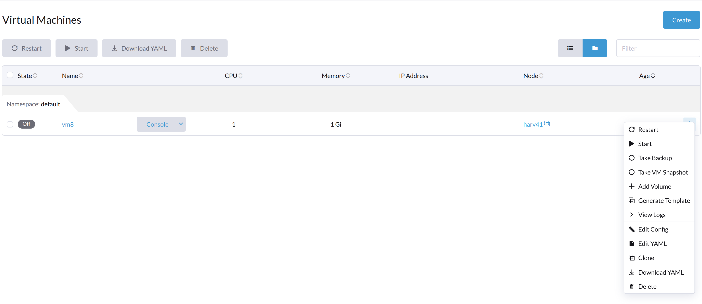

虚拟机问题
以下部分包含有关SUSE Virtualization虚拟机管理的故障排除信息。
虚拟机启动按钮不可见
虚拟机常规操作
在SUSE Virtualization用户界面上，虚拟机创建并启动后，*停止*按钮可见。

在虚拟机停止后，*启动*按钮可见。

当虚拟机从内部关闭时，*启动*和*重启*按钮均可见。

与虚拟机相关的一般对象
正在运行的虚拟机
与虚拟机相关的对象`vm`、vmi`和`pod`均存在。这三个对象的状态为`Running。
# kubectl get vm NAME AGE STATUS READY vm8 7m25s Running True # kubectl get vmi NAME AGE PHASE IP NODENAME READY vm8 78s Running 10.52.0.199 harv41 True # kubectl get pod NAME READY STATUS RESTARTS AGE virt-launcher-vm8-tl46h 1/1 Running 0 80s
使用SUSE Virtualization用户界面停止的虚拟机
仅存在对象`vm`，其状态为`Stopped`。`vmi`和`pod`均消失。
# kubectl get vm NAME AGE STATUS READY vm8 123m Stopped False # kubectl get vmi No resources found in default namespace. # kubectl get pod No resources found in default namespace. #
使用虚拟机的关机命令停止的虚拟机
与虚拟机相关的对象`vm`、vmi`和`pod`均存在。`vm`的状态为`Stopped，而`pod`的状态为`Completed`。
# kubectl get vm NAME AGE STATUS READY vm8 134m Stopped False # kubectl get vmi NAME AGE PHASE IP NODENAME READY vm8 2m49s Succeeded 10.52.0.199 harv41 False # kubectl get pod NAME READY STATUS RESTARTS AGE virt-launcher-vm8-tl46h 0/1 Completed 0 2m54s
问题分析
当问题发生时，vm、`vmi`和`pod`对象存在。对象的状态类似于*使用虚拟机的关机命令停止的虚拟机*。
示例：
虚拟机`ocffm031v000`未准备好（status: "False"），因为virt-launcher pod正在终止（reason: "PodTerminating"）。
- apiVersion: kubevirt.io/v1
kind: VirtualMachine
...
status:
conditions:
- lastProbeTime: "2023-07-20T08:37:37Z"
lastTransitionTime: "2023-07-20T08:37:37Z"
message: virt-launcher pod is terminating
reason: PodTerminating
status: "False"
type: Ready
同样，虚拟机实例（VMI）ocffm031v000`未准备好（`status: "False"），因为virt-launcher pod正在终止（reason: "PodTerminating"）。
- apiVersion: kubevirt.io/v1
kind: VirtualMachineInstance
...
name: ocffm031v000
...
status:
activePods:
ec36a1eb-84a5-4421-b57b-2c14c1975018: aibfredg02
conditions:
- lastProbeTime: "2023-07-20T08:37:37Z"
lastTransitionTime: "2023-07-20T08:37:37Z"
message: virt-launcher pod is terminating
reason: PodTerminating
status: "False"
type: Ready
另一方面，pod virt-launcher-ocffm031v000-rrkss`未准备好（`status: "False"），因为pod已完成运行（reason: "PodCompleted"）。
底层容器`0d7a0f64f91438cb78f026853e6bebf502df1bdeb64878d351fa5756edc98deb`已终止，`exitCode`为0。
- apiVersion: v1
kind: Pod
...
name: virt-launcher-ocffm031v000-rrkss
...
ownerReferences:
- apiVersion: kubevirt.io/v1
...
kind: VirtualMachineInstance
name: ocffm031v000
uid: 8d2cf524-7e73-4713-86f7-89e7399f25db
uid: ec36a1eb-84a5-4421-b57b-2c14c1975018
...
status:
conditions:
- lastProbeTime: "2023-07-18T13:48:56Z"
lastTransitionTime: "2023-07-18T13:48:56Z"
message: the virtual machine is not paused
reason: NotPaused
status: "True"
type: kubevirt.io/virtual-machine-unpaused
- lastProbeTime: "null"
lastTransitionTime: "2023-07-18T13:48:55Z"
reason: PodCompleted
status: "True"
type: Initialized
- lastProbeTime: "null"
lastTransitionTime: "2023-07-20T08:38:56Z"
reason: PodCompleted
status: "False"
type: Ready
- lastProbeTime: "null"
lastTransitionTime: "2023-07-20T08:38:56Z"
reason: PodCompleted
status: "False"
type: ContainersReady
...
containerStatuses:
- containerID: containerd://0d7a0f64f91438cb78f026853e6bebf502df1bdeb64878d351fa5756edc98deb
image: registry.suse.com/suse/sles/15.4/virt-launcher:0.54.0-150400.3.3.2
imageID: sha256:43bb08efdabb90913534b70ec7868a2126fc128887fb5c3c1b505ee6644453a2
lastState: {}
name: compute
ready: false
restartCount: 0
started: false
state:
terminated:
containerID: containerd://0d7a0f64f91438cb78f026853e6bebf502df1bdeb64878d351fa5756edc98deb
exitCode: 0
finishedAt: "2023-07-20T08:38:55Z"
reason: Completed
startedAt: "2023-07-18T13:50:17Z"
一个关键的区别是`Stop`和`Start`操作出现在`stateChangeRequests`属性的`vm`中。
status:
conditions:
...
printableStatus: Stopped
stateChangeRequests:
- action: Stop
uid: 8d2cf524-7e73-4713-86f7-89e7399f25db
- action: Start
根本原因
此问题的根本原因正在调查中。
值得注意的是， 源代码检查`vm`的状态并假设对象正在启动。没有`Start`和`Restart`操作被添加到对象中。
func (vf *vmformatter) canStart(vm *kubevirtv1.VirtualMachine, vmi *kubevirtv1.VirtualMachineInstance) bool {
if vf.isVMStarting(vm) {
return false
}
..
}
func (vf *vmformatter) canRestart(vm *kubevirtv1.VirtualMachine, vmi *kubevirtv1.VirtualMachineInstance) bool {
if vf.isVMStarting(vm) {
return false
}
...
}
func (vf *vmformatter) isVMStarting(vm *kubevirtv1.VirtualMachine) bool {
for _, req := range vm.Status.StateChangeRequests {
if req.Action == kubevirtv1.StartRequest {
return true
}
}
return false
}
虚拟机在启动状态中卡住，错误消息为`not a device node`
受影响的版本：v1.3.0
问题分析
与受影响虚拟机相关的pod状态为`CreateContainerError`。
$ kubectl get pods NAME READY STATUS RESTARTS AGE virt-launcher-vm1-w9bqs 0/2 CreateContainerError 0 9m39s
短语`failed to generate spec: not a device node`可以在以下位置找到：
$kubectl get pods -oyaml
apiVersion: v1
items:
apiVersion: v1
kind: Pod
metadata:
...
containerStatuses:
- image: registry.suse.com/suse/sles/15.5/virt-launcher:1.1.0-150500.8.6.1
imageID: ""
lastState: {}
name: compute
ready: false
restartCount: 0
started: false
state:
waiting:
message: 'failed to generate container "50f0ec402f6e266870eafb06611850a5a03b2a0a86fdd6e562959719ccc003b5"
spec: failed to generate spec: not a device node'
reason: CreateContainerError
`kubelet.log`文件：
file path: /var/lib/rancher/rke2/agent/logs/kubelet.log E0205 20:44:31.683371 2837 pod_workers.go:1294] "Error syncing pod, skipping" err="failed to \"StartContainer\" for \"compute\" with CreateContainerError: \"failed t o generate container \\\"255d42ec2e01d45b4e2480d538ecc21865cf461dc7056bc159a80ee68c411349\\\" spec: failed to generate spec: not a device node\"" pod="default/virt-laun cher-caddytest-9tjzj" podUID=d512bf3e-f215-4128-960a-0658f7e63c7c
`containerd.log`文件：
file path: /var/lib/rancher/rke2/agent/containerd/containerd.log
time="2024-02-21T11:24:00.140298800Z" level=error msg="CreateContainer within sandbox \"850958f388e63f14a683380b3c52e57db35f21c059c0d93666f4fdaafe337e56\" for &ContainerMetadata{Name:compute,Attempt:0,} failed" error="failed to generate container \"5ddad240be2731d5ea5210565729cca20e20694e364e72ba14b58127e231bc79\" spec: failed to generate spec: not a device node"
在向`containerd`添加调试信息后，它识别出错误信息`not a device node`出现在文件`pvc-3c1b28fb-*`上。
time="2024-02-22T15:15:08.557487376Z" level=error msg="CreateContainer within sandbox \"d23af3219cb27228623cf8168ec27e64e836ed44f2b2f9cf784f0529a7f92e1e\" for &ContainerMetadata{Name:compute,Attempt:0,} failed" error="failed to generate container \"e4ed94fb5e9145e8716bcb87aae448300799f345197d52a617918d634d9ca3e1\" spec: failed to generate spec: get device path: /var/lib/kubelet/plugins/kubernetes.io/csi/volumeDevices/publish/pvc-3c1b28fb-683e-4bf5-9869-c9107a0f1732/20291c6b-62c3-4456-be8a-fbeac118ec19 containerPath: /dev/disk-0 error: not a device node"
这是一个与CSI相关的文件，但它是一个空文件，而不是预期的设备文件。然后containerd拒绝了`CreateContainer`请求。
$ ls /var/lib/kubelet/plugins/kubernetes.io/csi/volumeDevices/publish/pvc-3c1b28fb-683e-4bf5-9869-c9107a0f1732/ -alth
total 8.0K
drwxr-x--- 2 root root 4.0K Feb 22 15:10 .
-rw-r--r-- 1 root root 0 Feb 22 14:28 aa851da3-cee1-45be-a585-26ae766c16ca
-rw-r--r-- 1 root root 0 Feb 22 14:07 20291c6b-62c3-4456-be8a-fbeac118ec19
drwxr-x--- 4 root root 4.0K Feb 22 14:06 ..
-rw-r--r-- 1 root root 0 Feb 21 15:48 4333c9fd-c2c8-4da2-9b5a-1a310f80d9fd
-rw-r--r-- 1 root root 0 Feb 21 09:18 becc0687-b6f5-433e-bfb7-756b00deb61b
$file /var/lib/kubelet/plugins/kubernetes.io/csi/volumeDevices/publish/pvc-3c1b28fb-683e-4bf5-9869-c9107a0f1732/20291c6b-62c3-4456-be8a-fbeac118ec19
: empty上面列出的输出与以下示例直接对比，后者显示了正在运行的虚拟机的预期设备文件。
$ ls /var/lib/kubelet/plugins/kubernetes.io/csi/volumeDevices/publish/pvc-732f8496-103b-4a08-83af-8325e1c314b7/ -alth total 8.0K drwxr-x--- 2 root root 4.0K Feb 21 10:53 . drwxr-x--- 4 root root 4.0K Feb 21 10:53 .. brw-rw---- 1 root root 8, 16 Feb 21 10:53 4883af80-c202-4529-a2c6-4e7f15fe5a9b
解决方法
集群级别操作：
-
查找受影响虚拟机的后端pod及相关的Longhorn卷。
$ kubectl get pods NAME READY STATUS RESTARTS AGE virt-launcher-vm1-nxfm4 0/2 CreateContainerError 0 7m11s $ kubectl get pvc -A NAMESPACE NAME STATUS VOLUME CAPACITY ACCESS MODES STORAGECLASS AGE default vm1-disk-0-9gc6h Bound pvc-f1798969-5b72-4d76-9f0e-64854af7b59c 1Gi RWX longhorn-image-fxsqr 7d22h
-
停止受影响的虚拟机，在SUSE Virtualization UI中。
虚拟机可能会卡在`Stopping`，请继续下一步。
-
强制删除后端pod。
$ kubectl delete pod virt-launcher-vm1-nxfm4 --force Warning: Immediate deletion does not wait for confirmation that the running resource has been terminated. The resource may continue to run on the cluster indefinitely. pod "virt-launcher-vm1-nxfm4" force deleted
虚拟机现在已关闭。

节点级别操作，逐个节点：
-
将节点标记为 不可调度。
-
卸载此节点中所有受影响的Longhorn卷。
您需要通过 SSH 登录到该节点并执行`sudo -i umount path`命令。
$ umount /var/lib/kubelet/plugins/kubernetes.io/csi/volumeDevices/pvc-f1798969-5b72-4d76-9f0e-64854af7b59c/dev/* umount: /var/lib/kubelet/plugins/kubernetes.io/csi/volumeDevices/pvc-f1798969-5b72-4d76-9f0e-64854af7b59c/dev/4b2ab666-27bd-4e3c-a218-fb3d48a72e69: not mounted. umount: /var/lib/kubelet/plugins/kubernetes.io/csi/volumeDevices/pvc-f1798969-5b72-4d76-9f0e-64854af7b59c/dev/6aaf2bbe-f688-4dcd-855a-f9e2afa18862: not mounted. umount: /var/lib/kubelet/plugins/kubernetes.io/csi/volumeDevices/pvc-f1798969-5b72-4d76-9f0e-64854af7b59c/dev/91488f09-ff22-45f4-afc0-ca97f67555e7: not mounted. umount: /var/lib/kubelet/plugins/kubernetes.io/csi/volumeDevices/pvc-f1798969-5b72-4d76-9f0e-64854af7b59c/dev/bb4d0a15-737d-41c0-946c-85f4a56f072f: not mounted. umount: /var/lib/kubelet/plugins/kubernetes.io/csi/volumeDevices/pvc-f1798969-5b72-4d76-9f0e-64854af7b59c/dev/d2a54e32-4edc-4ad8-a748-f7ef7a2cacab: not mounted.
-
取消该节点的不可调度标记。
-
启动受影响的虚拟机，在harvester UI中。
等待一段时间，虚拟机将成功运行。

新生成的csi文件是一个预期的设备文件。
$ ls /var/lib/kubelet/plugins/kubernetes.io/csi/volumeDevices/publish/pvc-f1798969-5b72-4d76-9f0e-64854af7b59c/ -alth ... brw-rw---- 1 root root 8, 64 Mar 6 11:47 7beb531d-a781-4775-ba5e-8773773d77f1
虚拟机 IP 地址未显示
未安装 qemu-guest-agent 软件包
分析
此问题通常发生在虚拟机上未安装 qemu-guest-agent 软件包时。要确定这是否是根本原因，请检查 VirtualMachineInstance 对象的状态。
$ kubectl get vmi -n <NAMESPACE> <NAME> -ojsonpath='{.status.interfaces[0].infoSource}'当未安装 qemu-guest-agent 软件包时，输出中不包含字符串 guest-agent。
解决方法
您可以通过编辑虚拟机配置来 安装 QEMU Guest Agent。
-
在 SUSE Virtualization 用户界面上，转到 虚拟机。
-
找到受影响的虚拟机，然后选择 ⋮ → 编辑配置。
-
在 高级选项 标签下，在 云配置 中，选择 安装 Guest Agent。
-
单击 保存。
然而，cloud-init 仅在虚拟机首次启动时运行一次。要应用新的 云配置 设置，您必须删除虚拟机中的 cloud-init 目录。
$ sudo rm -rf /var/lib/cloud/*删除目录后，您必须重启虚拟机，以便再次运行 cloud-init 并安装 qemu-guest-agent 软件包。
virt-launcher Pod 与客户操作系统之间的 IPv6 竞争条件
分析
QEMU 客户端代理负责向虚拟机实例报告客户操作系统的信息，包括接口详细信息，以便在 SUSE Virtualization 用户界面上显示。当虚拟机的 pod 接口获取 IPv6 链路本地地址并在 QEMU 客户端代理提供其自身信息之前将其报告给虚拟机实例时，会发生此问题。一旦发生这种情况，由于 KubeVirt 中的一个错误，QEMU 客户端代理的 IPv4 地址将永远不会被报告。
您可以使用以下步骤检查 pod 接口和虚拟机实例的 IP 地址：
-
检索虚拟机实例的 IP 地址：
$ kubectl get vmi -n <NAMESPACE> <NAME> -ojsonpath='{.status.interfaces[0].ipAddress}'
输出仅显示 IPv6 链路本地地址。
-
检索 pod 接口的 IP 地址：
$ kubectl exec -it -n <namespace> <pod-name> -- /bin/bash -c "ip a show label pod\*"
输出与虚拟机实例的 IPv6 地址匹配。
-
要检索分配的 IPv4 地址，请打开虚拟机的串行控制台，并在客户操作系统中运行
ip a。
|
此问题通常不会影响虚拟机的操作和正常运行时间。您仍然可以通过其网络接口的 IPv4 地址使用 SSH 访问虚拟机。在某些情况下，此问题可能会影响 Rancher 集成，导致客户集群中节点的配置和加入超时。 |
虚拟机 IP 地址间歇性未显示
分析
QEMU 客户端代理负责向虚拟机实例报告客户操作系统的信息，包括接口详细信息，以便在 SUSE Virtualization 用户界面上显示。当虚拟机实例更新了包含空网络接口的域数据时，会发生此问题，这是由上游 KubeVirt 问题引起的。
这种行为在 Alma Linux 9 和 Rocky Linux 9 中更为常见，其中 QEMU guest agent 频繁将文件系统信息更新到虚拟机实例。
要检查您的环境中是否存在此问题，请在不同时间运行以下命令：
$ kubectl get vmi -n <NAMESPACE> <NAME> -ojsonpath='{.status.interfaces[0].ipAddress}'
当您运行命令时，ipAddress 字段可能为空。
要检索分配的 IPv4 地址，请打开虚拟机的串行控制台，并在来宾操作系统中运行 ip a。
| 此问题通常不会影响虚拟机的操作和运行时间。您仍然可以通过其网络接口的 IPv4 地址使用 SSH 访问虚拟机。 |
解决方法
虽然没有直接的解决方法，但一个[上游修复](https://github.com/kubevirt/kubevirt/pull/13624)已经优化了代码，以减少来自 QEMU 来宾代理的不必要更新。此增强功能可能会防止该问题的发生。
无法调度的虚拟机
虚拟机可能因为未满足的亲和性规则而被标记为`Unschedulable`。
具体来说，`VirtualMachine`对象包含类似于以下的亲和性规则：
apiVersion: kubevirt.io/v1
kind: VirtualMachine
metadata:
name: vm100
namespace: default
spec:
affinity:
nodeAffinity:
requiredDuringSchedulingIgnoredDuringExecution:
nodeSelectorTerms:
- matchExpressions:
- key: network.harvesterhci.io/cn2
operator: In
values:
- 'true'Pod状态为`Pending`，错误消息表明没有节点满足亲和性规则的标准。
示例：
$ kubectl get pods
NAME READY STATUS RESTARTS AGE
virt-launcher-vm100-f4nh4 0/2 Pending 0 5m12s
$ kubectl get pods virt-launcher-vm100-f4nh4 -oyaml
apiVersion: v1
kind: Pod
metadata:
name: virt-launcher-vm100-f4nh4
namespace: default
spec:
affinity:
nodeAffinity:
requiredDuringSchedulingIgnoredDuringExecution:
nodeSelectorTerms:
- matchExpressions:
- key: network.harvesterhci.io/cn2
operator: In
values:
- "true"
...
status:
conditions:
- lastProbeTime: null
lastTransitionTime: "2025-07-28T16:21:56Z"
message: '0/2 nodes are available: 1 node(s) didn''t match Pod''s node affinity/selector,
1 node(s) had untolerated taint {node.kubernetes.io/unreachable: }. preemption:
0/2 nodes are available: 2 Preemption is not helpful for scheduling.'
reason: Unschedulable
status: "False"
type: PodScheduled
...根本原因
SUSE Virtualization可能会自动应用亲和性规则，具体取决于虚拟机的配置。在这个例子中，虚拟机`vm100`连接到集群网络`cn2`，并且SUSE Virtualization应用亲和性规则`network.harvesterhci.io/cn2`。然而，没有节点满足该规则的标准，因此虚拟机无法被调度。
通过云配置YAML意外修改虚拟机模板
当您使用模板创建虚拟机，然后使用*Edit as YAML*功能修改该虚拟机的用户数据时，保存更改后源模板可能会被意外修改。
此问题发生是因为系统未正确解除配置继承。由于新配置仍与源模板链接，保存更改会自动覆盖模板的数据。
|
在创建虚拟机时，尤其是使用模板时，避免使用*Edit as YAML*功能。相反，请使用*虚拟机上可用的专用字段和选项：创建 * 屏幕。 |
为了解决此问题，请执行以下步骤：
-
识别受影响虚拟机的名称和名称空间。
-
识别与受影响虚拟机相关的 Cloud Config Secret。
# Get the current Secret name linked to the VM's cloudInitNoCloud volume source: VM_NAME=<VM_NAME> VM_NAMESPACE=<VM_NAMESPACE> SECRET=$(kubectl get vm $VM_NAME -n $VM_NAMESPACE -o jsonpath='{.spec.template.spec.volumes[?(@.cloudInitNoCloud)].cloudInitNoCloud.secretRef.name}') SECRET_NAMESPACE=$(kubectl get secret -A | grep $SECRET | awk '{print $1}') echo "Current Secret: $SECRET_NAMESPACE -> $SECRET" -
创建 Secret 的独立副本。
导出当前 Secret，去除识别元数据，分配一个唯一名称，然后应用该 Secret。
# Define a new, unique name for the secret NEW_SECRET="$VM_NAME-$(date +%s)" # Export, clean, rename, and create the new Secret kubectl get secret $SECRET -n $SECRET_NAMESPACE -o json | \ jq 'del(.metadata.creationTimestamp, .metadata.resourceVersion, .metadata.uid, .metadata.ownerReferences, .metadata.annotations["kubectl.kubernetes.io/last-applied-configuration"], .metadata.selfLink)' | \ jq '.metadata.name = "'"$NEW_SECRET"'"' | \ jq '.metadata.namespace = "'"$VM_NAMESPACE"'"' | \ kubectl apply -n $VM_NAMESPACE -f - -
更新虚拟机配置以使用新的 Secret。
将虚拟机的`cloudInitNoCloud`卷源指向新的 Secret。
# Patch the VM to replace the secretRef name VOLUME_INDEX=$(kubectl get vm $VM_NAME -n $NAMESPACE -o json | jq '.spec.template.spec.volumes | to_entries[] | select(.value.cloudInitNoCloud != null) | .key') kubectl patch vm $VM_NAME -n $VM_NAMESPACE --type='json' \ -p='[{"op": "replace", "path": "/spec/template/spec/volumes/'$VOLUME_INDEX'/cloudInitNoCloud/secretRef/name", "value": "'"$NEW_SECRET"'"}, {"op": "replace", "path": "/spec/template/spec/volumes/'$VOLUME_INDEX'/cloudInitNoCloud/networkDataSecretRef/name", "value": "'"$NEW_SECRET"'"}]'
一旦云配置由唯一 Secret 支持，您可以使用SUSE Virtualization UI的YAML编辑器编辑虚拟机配置，而不影响源模板。
相关问题： #9207